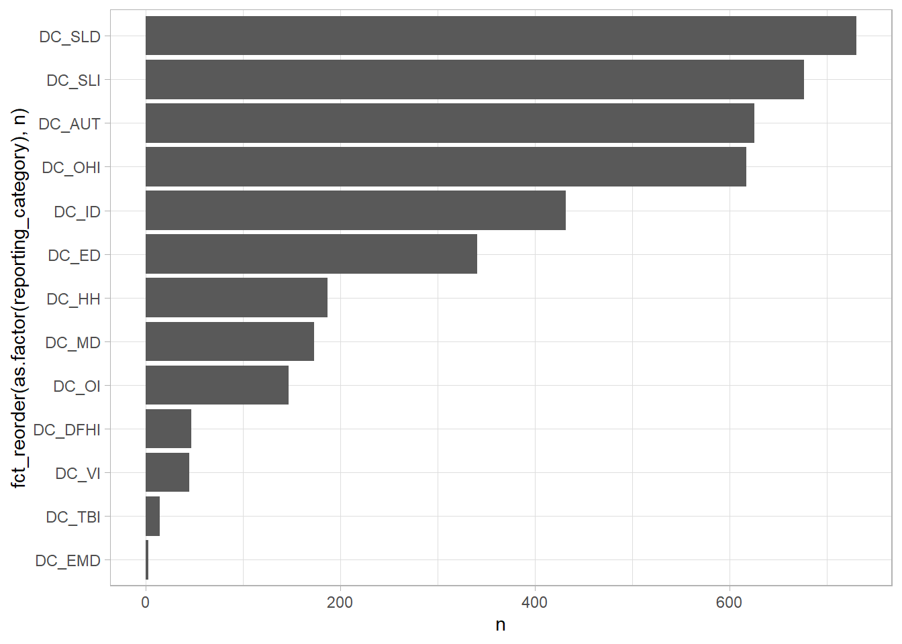
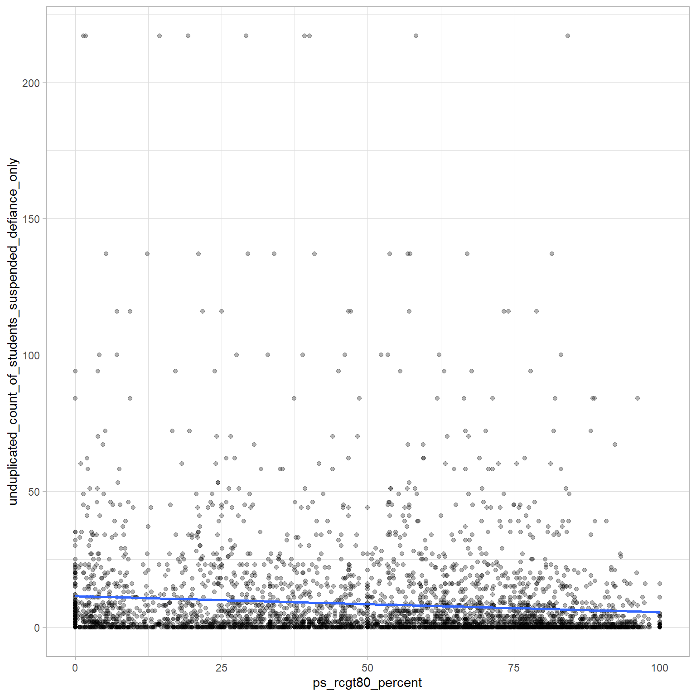
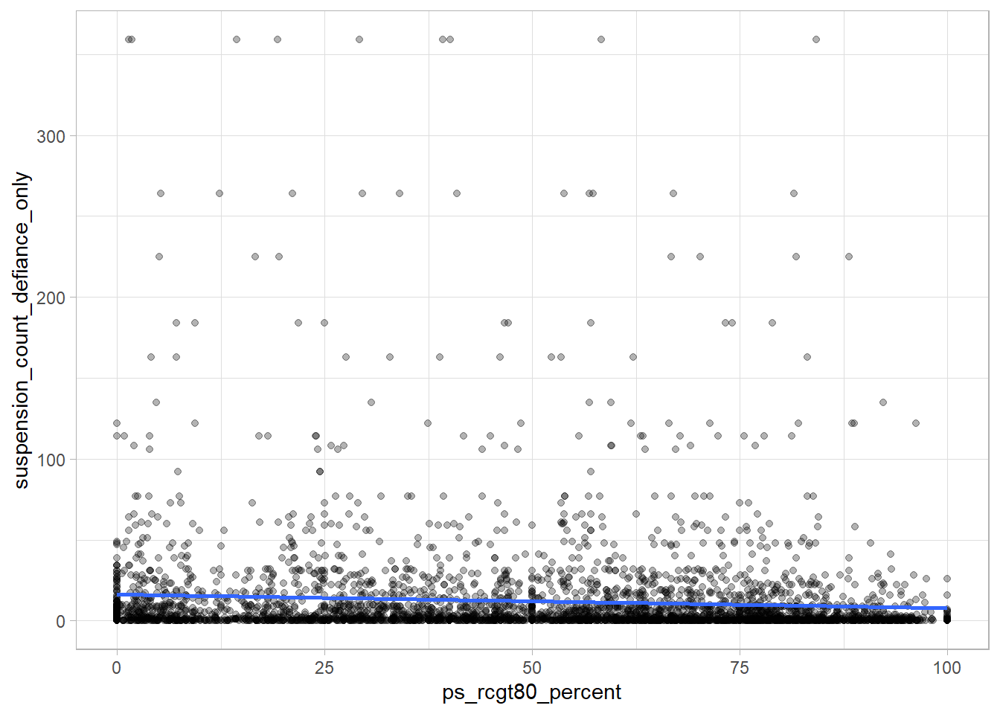
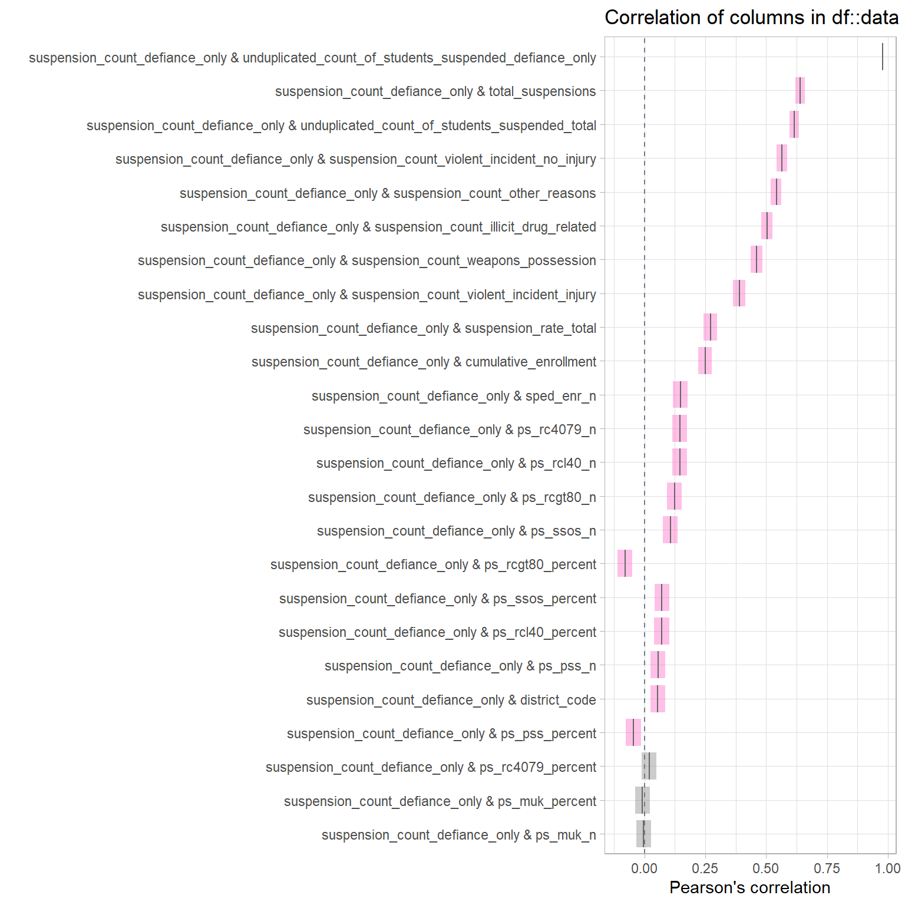
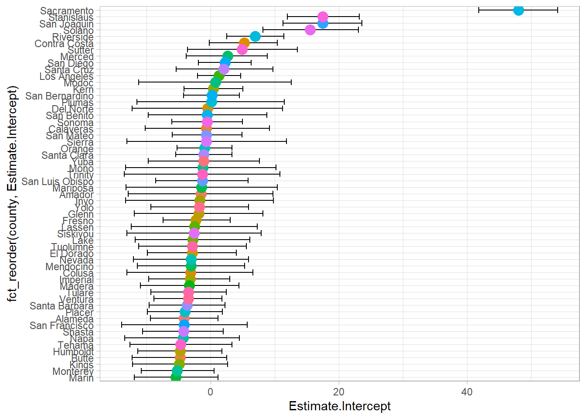
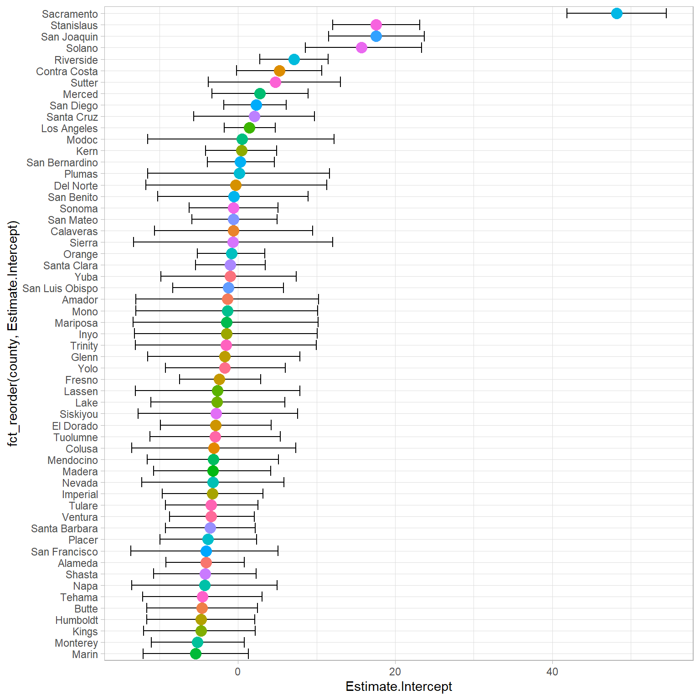

── Attaching core tidyverse packages ──────────────────────── tidyverse 2.0.0 ──
✔ dplyr 1.1.4 ✔ readr 2.1.5
✔ forcats 1.0.0 ✔ stringr 1.5.1
✔ ggplot2 3.5.1 ✔ tibble 3.2.1
✔ lubridate 1.9.3 ✔ tidyr 1.3.1
✔ purrr 1.0.2
── Conflicts ────────────────────────────────────────── tidyverse_conflicts() ──
✖ dplyr::filter() masks stats::filter()
✖ dplyr::lag() masks stats::lag()
ℹ Use the conflicted package (<http://conflicted.r-lib.org/>) to force all conflicts to become errors
This is cmdstanr version 0.8.1
- CmdStanR documentation and vignettes: mc-stan.org/cmdstanr
- CmdStan path: C:/Users/Jonathan/.cmdstan/cmdstan-2.35.0
- CmdStan version: 2.35.0
Loading required package: Rcpp
Loading 'brms' package (version 2.21.0). Useful instructions
can be found by typing help('brms'). A more detailed introduction
to the package is available through vignette('brms_overview').
Attaching package: 'brms'
The following object is masked from 'package:stats':
ar
Attaching package: 'tidybayes'
The following objects are masked from 'package:brms':
dstudent_t, pstudent_t, qstudent_t, rstudent_t
Rows: 115011 Columns: 23
── Column specification ────────────────────────────────────────────────────────
Delimiter: ","
chr (22): academic_year, aggregate_level, county_code, school_code, county_n...
dbl (1): district_code
ℹ Use `spec()` to retrieve the full column specification for this data.
ℹ Specify the column types or set `show_col_types = FALSE` to quiet this message.
Rows: 226179 Columns: 21
── Column specification ────────────────────────────────────────────────────────
Delimiter: ","
chr (20): academic_year, aggregate_level, county_code, school_code, county_n...
dbl (1): district_code
ℹ Use `spec()` to retrieve the full column specification for this data.
ℹ Specify the column types or set `show_col_types = FALSE` to quiet this message.Students with Disabilities and Suspension in California Districts
Data
Data gathered from The California Department of Education’s Suspension Data Downloadable Data Files
Data gathered from The California Department of Education’s Special Education Downloadable Data Files
Data was then loaded from the txt files and saved as csv files in case files were changed from the California Department of Education. You can find the data files as csv files here.
Variables of interest in data
reporting category
- DC_AUT = Autism (AUT)
- DC_DB = Deaf Blindedness (DB)
- DC_DFHI = Deaf (DF)/Hearing Impairment (HI)
- DC_ED = Emotional Disturbance (ED)
- DC_EMD = Established Medical Disability (EMD)
- DC_HH = Hard of Hearing (HH)
- DC_ID = Intellectual Disability (ID)
- DC_MD = Multiple Disabilities (MD)
- DC_OHI = Other Health Impairment (OHI)
- DC_OI = Orthopedic Health Impairment (OI)
- DC_SLD = Specific Learning Disability (SLD)
- DC_SLI = Speech or Language Impairment (SLI)
- DC_TBI = Traumatic Brain Injury (TBI)
- DC_VI = Visual Impairment (VI)
ps_rcgt80_percent
- A program setting where a student with disabilities participates in regular general education classroom setting, which includes at least 50 percent nondisabled students, at least 80 percent of the school day. On the report, data in these columns represent the number/percentage of the Special Education Enrollment for students whose Special Education Program Setting is Regular Classroom/Public Day School or Regular Independent Study or Virtual Charter and whose General Education Classroom Setting is Regular Class 80 Percent or More of the Day.
data |>
count(
reporting_category
) |>
ggplot(
aes(
fct_reorder(
as.factor(reporting_category),
n
),
n
)
) +
geom_col(
position = "dodge"
) +
coord_flip()
data |>
count(
reporting_category
) |>
arrange(desc(n)) |>
reactable()data <- data |>
filter(
!reporting_category %in% c("DC_TBI", "DC_EMD")
)
data |>
ggplot(
aes(
ps_rcgt80_percent,
unduplicated_count_of_students_suspended_defiance_only
)
) +
geom_point(alpha = .3) +
geom_smooth(
method = "lm",
se = FALSE
) +
theme(
legend.position = "none"
)`geom_smooth()` using formula = 'y ~ x'
data |>
ggplot(
aes(
ps_rcgt80_percent,
suspension_count_defiance_only
)
) +
geom_point(alpha = .3) +
geom_smooth(
method = "lm",
se = FALSE
) +
theme(
legend.position = "none"
)`geom_smooth()` using formula = 'y ~ x'
Checking Predictors
data |>
inspectdf::inspect_cor(with = "suspension_count_defiance_only") |>
inspectdf::show_plot()Warning: Columns with 0 variance found: ps_muk_n, ps_muk_percent
cor.test(data$ps_rcgt80_n, data$sped_enr_n)
Pearson's product-moment correlation
data: data$ps_rcgt80_n and data$sped_enr_n
t = 175.36, df = 4018, p-value < 2.2e-16
alternative hypothesis: true correlation is not equal to 0
95 percent confidence interval:
0.9367690 0.9439197
sample estimates:
cor
0.9404483 Modeling
fit <- brm(
suspension_count_defiance_only ~ as.factor(reporting_category)*ps_rcgt80_n + (1 | county_name),
data = data,
family = gaussian(),
prior = c(
set_prior("normal(0, 1)", class = "b"),
set_prior("normal(0, 1)", class = "sd")
),
cores = parallel::detectCores(),
control = list(adapt_delta = .95),
seed = 12345,
backend = "cmdstanr"
)
fit2 <- brm(
unduplicated_count_of_students_suspended_defiance_only ~ as.factor(reporting_category)*ps_rcgt80_n + (1 | county_name),
data = data,
family = gaussian(),
prior = c(
set_prior("normal(0, 1)", class = "b"),
set_prior("normal(0, 1)", class = "sd")
),
cores = parallel::detectCores(),
control = list(adapt_delta = .95),
seed = 12345,
backend = "cmdstanr"
)
# saveRDS(fit, here::here("projects/student_suspensions/data", "model_fit.RDS"))
# saveRDS(fit, here::here("projects/student_suspensions/data", "unduplicated_model_fit.RDS"))Defiance Only Suspensions
Warning in tidy.brmsfit(fit): some parameter names contain underscores: term
naming may be unreliable!
Unduplicated Defiance Only Suspensions
Warning in tidy.brmsfit(fit2): some parameter names contain underscores: term
naming may be unreliable!
All Code Below
sessioninfo::session_info()─ Session info ───────────────────────────────────────────────────────────────
setting value
version R version 4.4.1 (2024-06-14 ucrt)
os Windows 10 x64 (build 19045)
system x86_64, mingw32
ui RTerm
language (EN)
collate English_United States.utf8
ctype English_United States.utf8
tz America/Los_Angeles
date 2024-09-24
pandoc 3.1.11 @ C:\\Users\\Jonathan\\AppData\\Local\\Programs\\Quarto\\bin\\tools/ (via rmarkdown)
─ Packages ───────────────────────────────────────────────────────────────────
! package * version date (UTC) lib source
abind 1.4-5 2016-07-21 [1] CRAN (R 4.4.0)
arrayhelpers 1.1-0 2020-02-04 [1] CRAN (R 4.4.1)
backports 1.5.0 2024-05-23 [1] CRAN (R 4.4.0)
bayesplot 1.11.1 2024-02-15 [1] CRAN (R 4.4.1)
bit 4.0.5 2022-11-15 [1] CRAN (R 4.4.1)
bit64 4.0.5 2020-08-30 [1] CRAN (R 4.4.1)
bridgesampling 1.1-2 2021-04-16 [1] CRAN (R 4.4.1)
brms * 2.21.0 2024-03-20 [1] CRAN (R 4.4.1)
Brobdingnag 1.2-9 2022-10-19 [1] CRAN (R 4.4.1)
broom * 1.0.6 2024-05-17 [1] CRAN (R 4.4.1)
broom.mixed * 0.2.9.5 2024-04-01 [1] CRAN (R 4.4.1)
checkmate 2.3.1 2023-12-04 [1] CRAN (R 4.4.1)
cli 3.6.3 2024-06-21 [1] CRAN (R 4.4.1)
cmdstanr * 0.8.1 2024-07-06 [1] https://stan-dev.r-universe.dev (R 4.4.0)
coda 0.19-4.1 2024-01-31 [1] CRAN (R 4.4.1)
codetools 0.2-20 2024-03-31 [2] CRAN (R 4.4.1)
colorspace 2.1-0 2023-01-23 [1] CRAN (R 4.4.1)
crayon 1.5.3 2024-06-20 [1] CRAN (R 4.4.1)
crosstalk 1.2.1 2023-11-23 [1] CRAN (R 4.4.1)
curl 5.2.1 2024-03-01 [1] CRAN (R 4.4.1)
digest 0.6.36 2024-06-23 [1] CRAN (R 4.4.1)
distributional 0.4.0 2024-02-07 [1] CRAN (R 4.4.1)
dplyr * 1.1.4 2023-11-17 [1] CRAN (R 4.4.1)
evaluate 0.24.0 2024-06-10 [1] CRAN (R 4.4.1)
fansi 1.0.6 2023-12-08 [1] CRAN (R 4.4.1)
farver 2.1.2 2024-05-13 [1] CRAN (R 4.4.1)
fastmap 1.2.0 2024-05-15 [1] CRAN (R 4.4.1)
forcats * 1.0.0 2023-01-29 [1] CRAN (R 4.4.1)
furrr 0.3.1 2022-08-15 [1] CRAN (R 4.4.1)
future 1.33.2 2024-03-26 [1] CRAN (R 4.4.1)
generics 0.1.3 2022-07-05 [1] CRAN (R 4.4.1)
ggdist 3.3.2 2024-03-05 [1] CRAN (R 4.4.1)
ggfittext 0.10.2 2024-02-01 [1] CRAN (R 4.4.1)
ggplot2 * 3.5.1 2024-04-23 [1] CRAN (R 4.4.1)
globals 0.16.3 2024-03-08 [1] CRAN (R 4.4.0)
glue 1.7.0 2024-01-09 [1] CRAN (R 4.4.1)
gridExtra 2.3 2017-09-09 [1] CRAN (R 4.4.1)
gtable 0.3.5 2024-04-22 [1] CRAN (R 4.4.1)
here 1.0.1 2020-12-13 [1] CRAN (R 4.4.1)
hms 1.1.3 2023-03-21 [1] CRAN (R 4.4.1)
htmltools 0.5.8.1 2024-04-04 [1] CRAN (R 4.4.1)
htmlwidgets 1.6.4 2023-12-06 [1] CRAN (R 4.4.1)
inline 0.3.19 2021-05-31 [1] CRAN (R 4.4.1)
inspectdf 0.0.12 2022-08-09 [1] CRAN (R 4.4.1)
jsonlite 1.8.8 2023-12-04 [1] CRAN (R 4.4.1)
knitr 1.48 2024-07-07 [1] CRAN (R 4.4.1)
labeling 0.4.3 2023-08-29 [1] CRAN (R 4.4.0)
lattice 0.22-6 2024-03-20 [2] CRAN (R 4.4.1)
lifecycle 1.0.4 2023-11-07 [1] CRAN (R 4.4.1)
listenv 0.9.1 2024-01-29 [1] CRAN (R 4.4.1)
loo 2.8.0 2024-07-03 [1] CRAN (R 4.4.1)
lubridate * 1.9.3 2023-09-27 [1] CRAN (R 4.4.1)
magrittr 2.0.3 2022-03-30 [1] CRAN (R 4.4.1)
Matrix 1.7-0 2024-04-26 [2] CRAN (R 4.4.1)
matrixStats 1.3.0 2024-04-11 [1] CRAN (R 4.4.1)
mgcv 1.9-1 2023-12-21 [2] CRAN (R 4.4.1)
munsell 0.5.1 2024-04-01 [1] CRAN (R 4.4.1)
mvtnorm 1.2-5 2024-05-21 [1] CRAN (R 4.4.1)
nlme 3.1-164 2023-11-27 [2] CRAN (R 4.4.1)
parallelly 1.37.1 2024-02-29 [1] CRAN (R 4.4.0)
pillar 1.9.0 2023-03-22 [1] CRAN (R 4.4.1)
pkgbuild 1.4.4 2024-03-17 [1] CRAN (R 4.4.1)
pkgconfig 2.0.3 2019-09-22 [1] CRAN (R 4.4.1)
posterior 1.6.0 2024-07-03 [1] CRAN (R 4.4.1)
prettyunits 1.2.0 2023-09-24 [1] CRAN (R 4.4.1)
processx 3.8.4 2024-03-16 [1] CRAN (R 4.4.1)
progress 1.2.3 2023-12-06 [1] CRAN (R 4.4.1)
ps 1.7.7 2024-07-02 [1] CRAN (R 4.4.1)
purrr * 1.0.2 2023-08-10 [1] CRAN (R 4.4.1)
QuickJSR 1.3.0 2024-07-08 [1] CRAN (R 4.4.1)
R6 2.5.1 2021-08-19 [1] CRAN (R 4.4.1)
Rcpp * 1.0.12 2024-01-09 [1] CRAN (R 4.4.1)
D RcppParallel 5.1.8 2024-07-06 [1] CRAN (R 4.4.1)
reactable * 0.4.4 2023-03-12 [1] CRAN (R 4.4.1)
reactR 0.6.0 2024-06-26 [1] CRAN (R 4.4.1)
readr * 2.1.5 2024-01-10 [1] CRAN (R 4.4.1)
rlang 1.1.4 2024-06-04 [1] CRAN (R 4.4.1)
rmarkdown 2.27 2024-05-17 [1] CRAN (R 4.4.1)
rprojroot 2.0.4 2023-11-05 [1] CRAN (R 4.4.1)
rstan 2.32.6 2024-03-05 [1] CRAN (R 4.4.1)
rstantools 2.4.0 2024-01-31 [1] CRAN (R 4.4.1)
scales 1.3.0 2023-11-28 [1] CRAN (R 4.4.1)
sessioninfo 1.2.2 2021-12-06 [1] CRAN (R 4.4.1)
StanHeaders 2.32.9 2024-05-29 [1] CRAN (R 4.4.1)
stringi 1.8.4 2024-05-06 [1] CRAN (R 4.4.0)
stringr * 1.5.1 2023-11-14 [1] CRAN (R 4.4.1)
svUnit 1.0.6 2021-04-19 [1] CRAN (R 4.4.1)
tensorA 0.36.2.1 2023-12-13 [1] CRAN (R 4.4.0)
tibble * 3.2.1 2023-03-20 [1] CRAN (R 4.4.1)
tidybayes * 3.0.6 2023-08-12 [1] CRAN (R 4.4.1)
tidyr * 1.3.1 2024-01-24 [1] CRAN (R 4.4.1)
tidyselect 1.2.1 2024-03-11 [1] CRAN (R 4.4.1)
tidyverse * 2.0.0 2023-02-22 [1] CRAN (R 4.4.1)
timechange 0.3.0 2024-01-18 [1] CRAN (R 4.4.1)
tzdb 0.4.0 2023-05-12 [1] CRAN (R 4.4.1)
utf8 1.2.4 2023-10-22 [1] CRAN (R 4.4.1)
V8 4.4.2 2024-02-15 [1] CRAN (R 4.4.1)
vctrs 0.6.5 2023-12-01 [1] CRAN (R 4.4.1)
vroom 1.6.5 2023-12-05 [1] CRAN (R 4.4.1)
withr 3.0.0 2024-01-16 [1] CRAN (R 4.4.1)
xfun 0.45 2024-06-16 [1] CRAN (R 4.4.1)
yaml 2.3.9 2024-07-05 [1] CRAN (R 4.4.1)
[1] C:/Users/Jonathan/AppData/Local/R/win-library/4.4
[2] C:/Program Files/R/R-4.4.1/library
D ── DLL MD5 mismatch, broken installation.
──────────────────────────────────────────────────────────────────────────────library(tidyverse)
library(reactable)
library(cmdstanr)
library(brms)
library(broom)
library(broom.mixed)
library(tidybayes)
theme_set(theme_light())
two_three <- read_csv(here::here("projects/student_suspensions/data", "special_education_2022_2023.csv"))
suspend23 <- read_csv(here::here("projects/student_suspensions/data", "suspension_2022_2023.csv"))
suspend23 <- suspend23 |>
filter(
aggregate_level == "D" &
reporting_category != "TA" &
charter_yn == "No"
)
sub23 <- two_three |>
filter(
reporting_category != "TA" &
aggregate_level == "D" &
charter_school == "N"
)
suspend23 <- suspend23 |> filter(reporting_category == "SD")
data <- inner_join(
sub23,
suspend23,
by = c(
"academic_year",
"aggregate_level",
"county_code",
"district_code",
"county_name",
"district_name"
)
)
data <- data |>
select(
-c(
school_name.x,
school_code.x,
reporting_category.y,
school_code.y,
school_name.y
)
) |>
rename(reporting_category = reporting_category.x)
data <- data |>
mutate(
across(
c(
sped_enr_n:ps_muk_percent,
cumulative_enrollment:suspension_count_other_reasons
),
~case_when(
.x == "*" ~ NA_character_,
TRUE ~ .x
)
)
)
data <- data |>
select(
academic_year:district_name,
reporting_category:ps_muk_percent,
cumulative_enrollment:suspension_count_other_reasons
)
data <- data |>
mutate(
across(
c(
sped_enr_n:suspension_count_other_reasons
),
~as.numeric(.x)
)
)
data <- data |> drop_na()
data <- data |>
filter(
str_detect(
reporting_category,
"DC"
)
)
data |>
count(
reporting_category
) |>
ggplot(
aes(
fct_reorder(
as.factor(reporting_category),
n
),
n
)
) +
geom_col(
position = "dodge"
) +
coord_flip()
data |>
count(
reporting_category
) |>
arrange(
desc(n)
) |>
reactable()
data <- data |>
filter(
!reporting_category %in% c("DC_TBI", "DC_EMD")
)
data |>
ggplot(
aes(
ps_rcgt80_percent,
unduplicated_count_of_students_suspended_defiance_only
)
) +
geom_point(alpha = .3) +
geom_smooth(
method = "lm",
se = FALSE
) +
theme(
legend.position = "none"
)
data |>
ggplot(
aes(
ps_rcgt80_percent,
suspension_count_defiance_only
)
) +
geom_point(alpha = .3) +
geom_smooth(
method = "lm",
se = FALSE
) +
theme(
legend.position = "none"
)
data |>
inspectdf::inspect_cor(with = "suspension_count_defiance_only") |>
inspectdf::show_plot()
cor.test(data$ps_rcgt80_n, data$sped_enr_n)
fit <- brm(
suspension_count_defiance_only ~ as.factor(reporting_category)*ps_rcgt80_n + (1 | county_name),
data = data,
family = gaussian(),
prior = c(
set_prior("normal(0, 1)", class = "b"),
set_prior("normal(0, 1)", class = "sd")
),
cores = parallel::detectCores(),
control = list(adapt_delta = .95),
seed = 12345,
backend = "cmdstanr"
)
fit2 <- brm(
unduplicated_count_of_students_suspended_defiance_only ~ as.factor(reporting_category)*ps_rcgt80_n + (1 | county_name),
data = data,
family = gaussian(),
prior = c(
set_prior("normal(0, 1)", class = "b"),
set_prior("normal(0, 1)", class = "sd")
),
cores = parallel::detectCores(),
control = list(adapt_delta = .95),
seed = 12345,
backend = "cmdstanr"
)
saveRDS(fit, here::here("projects/student_suspensions/data", "model_fit.RDS"))
fit <- read_rds(here::here("projects/student_suspensions/data", "model_fit.RDS"))
tidy(fit) |>
mutate(
across(
everything(),
~round(.x, 2)
)
) |>
reactable()
ranef(fit)$county_name |>
as_tibble(rownames = "county") |>
ggplot(
aes(
fct_reorder(
county,
Estimate.Intercept
),
Estimate.Intercept
)
) +
geom_errorbar(
aes(
ymin = Q2.5.Intercept,
ymax = Q97.5.Intercept
)
) +
geom_point(
aes(
color = county
),
size = 4
) +
coord_flip() +
theme(
legend.position = "none"
)
tidy(fit2) |>
mutate(
across(
-c(
effect,
component,
group,
term
),
~round(.x, 2)
)
) |>
reactable()
ranef(fit2)$county_name |>
as_tibble(rownames = "county") |>
ggplot(
aes(
fct_reorder(
county,
Estimate.Intercept
),
Estimate.Intercept
)
) +
geom_errorbar(
aes(
ymin = Q2.5.Intercept,
ymax = Q97.5.Intercept
)
) +
geom_point(
aes(
color = county
),
size = 4
) +
coord_flip() +
theme(
legend.position = "none"
)